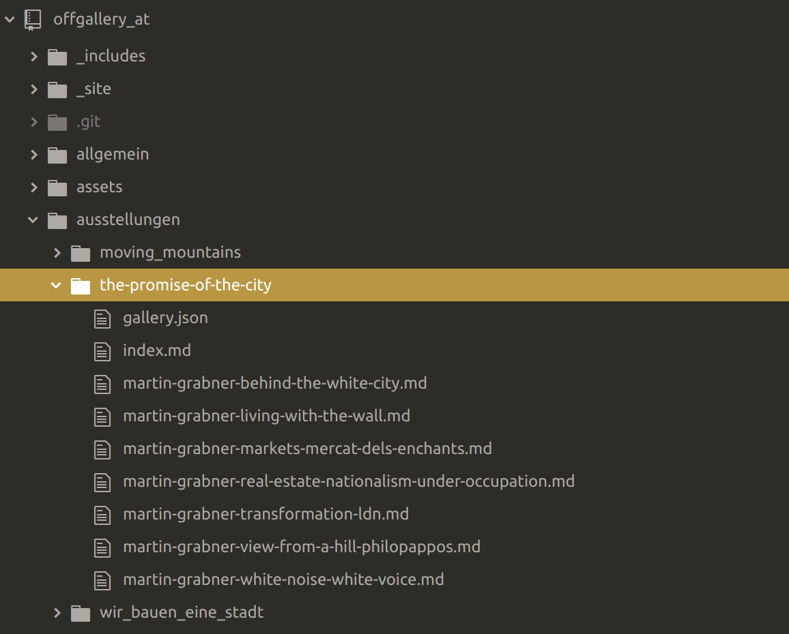

Content First und Static Site Generators
Heinz Wittenbrink
2019-09-21
Was sind Static Site Generators
- Website wird lokal generiert
- Statische Auslieferung
- Verbindung mit Microservices
- Markdown und andere Textinhaltsformate
- Template-Sprachen
Vorteile
- Geschwindigkeit
- Leichte Entwicklung
Jekyll und Hugo
- Jekyll: Erster erfolgreicher SSG, enge Verbindung zu GitHub
- Hugo: Hohe Performanz und Flexibilität
Beispielprojekt
Repository: https://github.com/heinzwittenbrink/offgallery_at Daten der Website: https://github.com/heinzwittenbrink/offgallery_at/tree/master/_site Testversion: https://silly-hypatia-0d5c1f.netlify.com/
eleventy
- Eleventy
- Basis: JavaScript, NodeJS
- Unterstützt viele Templatesprachen
Installation
- Getting Started—Eleventy
- Lokale oder globale Installation
Generieren der Site
Beispiel: Starten von eleventy mit lokalem Server
Ordnerstruktur

Content als Markdown
---
layout: picture_desc.njk
tags: thepromiseofthecity
artist: Martin Grabner
rights: Martin Grabner
gallery:
- martin-grabner-transformation-ldn
title: Transformation LDN
author: Martin Grabner
---
Londons Straßen nahe der City harren der unvermeidlichen Gentrifizierung. Inzwischen steht in dieser Baulücke in der Clerkenwell Road ein mehrgeschoßiges Geschäftshaus.Frontmatter/tags

Directory data
RSS-Feed
---
permalink: feed.xml
eleventyExcludeFromCollections: true
metadata:
title: off_gallery.at
url: https://offgallery.at/
author:
name: Anastasija Georgi, Erika Petrić, Heinz Wittenbrink
email: info@offgallery.at
feed:
subtitle: offgallery_graz - Nachrichten und Einladungen
filename: feed.xml
path: feed/feed.xml
url: https://offgallery.at/feed.xml
id: https://offgallery.at/
---
<?xml version="1.0" encoding="utf-8"?>
<feed xmlns="http://www.w3.org/2005/Atom">
<title>{{ metadata.title }}</title>
<subtitle>{{ metadata.feed.subtitle }}</subtitle>
<link href="{{ metadata.feed.url }}" rel="self"/>
<link href="{{ metadata.url }}"/>Sitemap
---
permalink: /sitemap.xml
eleventyExcludeFromCollections: true
---
<?xml version="1.0" encoding="utf-8"?>
<urlset xmlns="http://www.sitemaps.org/schemas/sitemap/0.9">
{%- for page in collections.all %}
{% set absoluteUrl %}{{ page.url | url | absoluteUrl(metadata.url) }}{% endset %}
<url>
<loc>{{ absoluteUrl }}</loc>
<lastmod>{{ page.date | htmlDateString }}</lastmod>
</url>
{%- endfor %}
</urlset>
SSG-Ökosystem
Netlify
Forestry
Fragen
Unterstützen SSGs das Prinzip Content First besser als andere CMS?
Welchen Support bieten sie für strukturierte Daten?
Aufgaben
- Andere SSGs testen: Jekyll, Hugo
- Konzept einer Inhaltsstruktur für oer.fh-joanneum.at/contentstrategy entwickeln
- Welche collections sind interessant?
- Welche Metadaten sind wichtig?